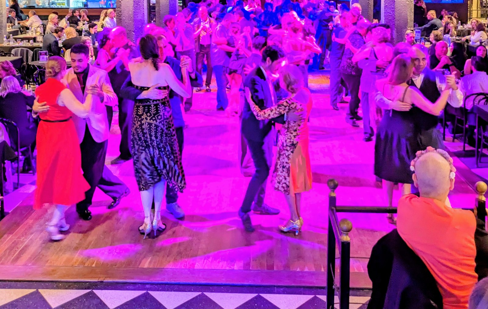
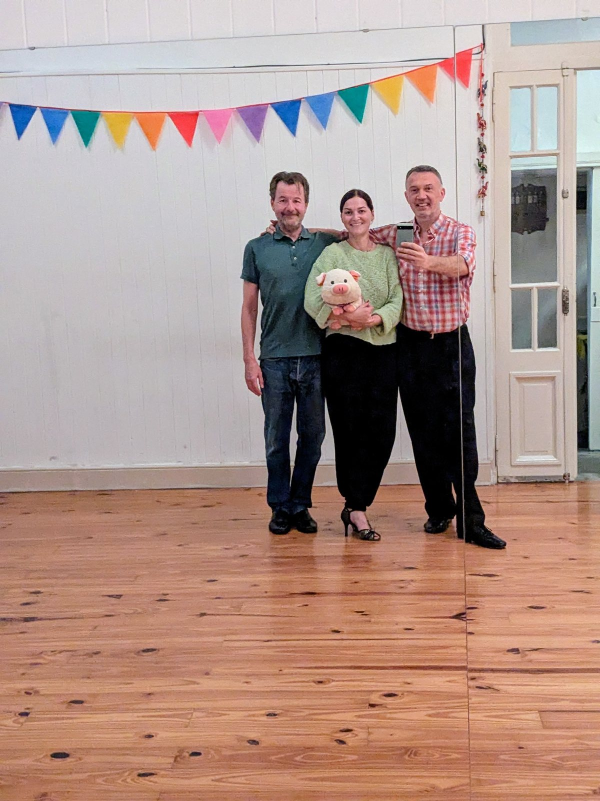
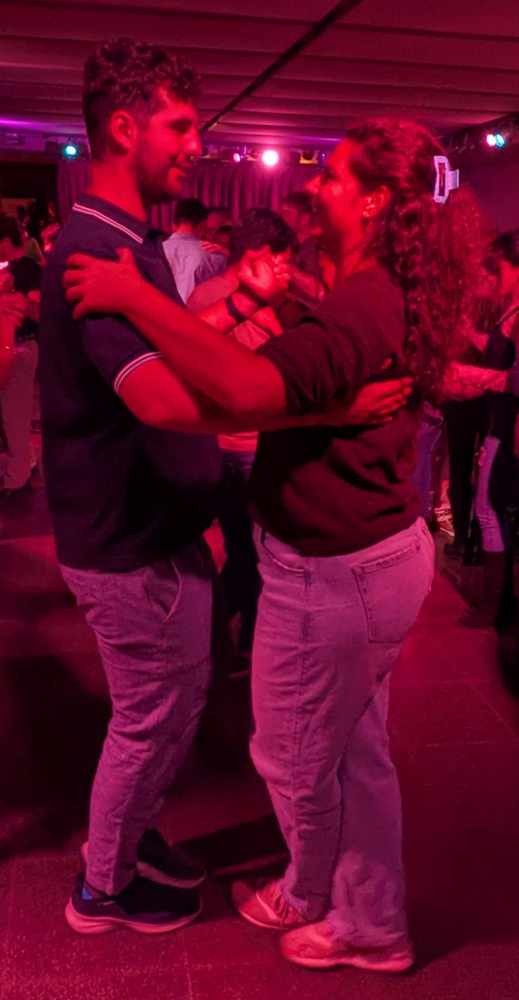
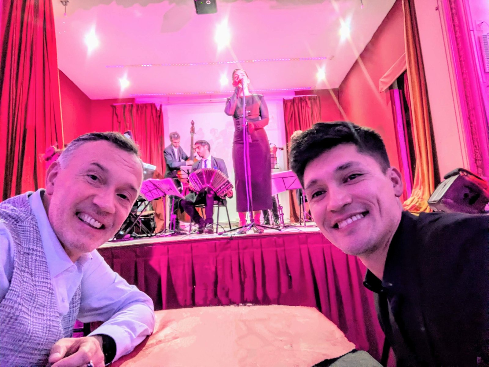

If you'd like to see the tango of Buenos Aires from the inside, not from a seat at a show, spend a night at a milonga with me.

01-room-from-table.jpg · the room on an orchestra night, from the tableWhatsApp +54 9 11 3785-5823
A milonga is where people in Buenos Aires dance tango: a dance hall with tables around the floor, people of all ages dancing with each other, and a live orchestra on some nights. It is not a show: the orchestra is on a stage, the dancing is not. The tango happens on the floor, among locals who came to dance, and you sit with them.

02-arts-studio.jpg · Arts in the studio'">I'm Arts, tango dancer and teacher. For more than ten years I've been taking visitors into the milongas of Buenos Aires, and teaching tango here and in Europe, to beginners as well as experienced dancers.

04-embrace.jpg · the embrace, or feet walking (optional)'">A car with a driver picks you up at your hotel and takes you to a dance studio, where the night begins with an hour of private class with me. We go through the embrace, the walk and the music, enough to get the feeling of tango in your own body. The class adapts to you, whether or not you have danced before.

03-table.jpg · the reserved table'">After the class we go together to a milonga, on a night with a live orchestra. We have a table reserved, with a view of the orchestra and the dance floor. I explain what is happening around us: how people invite each other, when to dance and when not, what to watch from your table. Through the night I tell you the history of tango: where it was born, how it conquered Buenos Aires and Europe, the golden age of tango.
You can try the floor if you feel like it, or simply listen to the orchestra, watch the dancers and enjoy the night.
We leave after the orchestra and the car takes you back to your door. Four to five hours in all: back around 1am, on Sundays earlier.
“Thank you for introducing Marianne and I to the world of Tango in Buenos Aires.”
Raphael, France
“It was a great evening and we're very grateful you were there.”
Rachel and Glen, United Kingdom
“Thank you again for sharing your love of Tango with me. It was a great introduction.”
Linda, United States, travelling alone
Not included: food and other drinks at the milonga, paid at the table.
Nights with a live orchestra: Tuesday, Thursday, Friday, Saturday and Sunday. Roughly 9pm to 1am, Sunday earlier; 4 to 5 hours in total.
USD 150 (EUR 130) per person, for two or more
USD 200 (EUR 170) for one person alone
One booking per night: a couple, friends, or one person travelling alone. 18 and over. Stairs at the studio and the milonga: not suitable for reduced mobility. In English or Spanish.
Message me on WhatsApp with the night you'd like and how many of you there are. A 50% deposit by payment link confirms the night; free cancellation up to 48 hours before it.
Ask about a night on WhatsApp+54 9 11 3785-5823
Are we the only people? In the class, in the car and at your table, yes: nobody is added to your group. At the milonga, no: you are in a room of 50 to 200 people, the locals on their night out.
I have never danced. Most of my guests hadn't. The class goes at your pace, and tango began as walking to the music: if you can walk, you can dance tango.
What do we wear? Something comfortable to move in. Smart casual is fine, but no shorts or flip-flops. If you have danced before, shoes with a sole that slides will help.
Can we eat there? Every milonga has a bar and most have a kitchen. The night before, I'll tell you what this one serves. You pay at the table, in pesos or by card.
When are we back? Around 1am on most nights and around midnight on a Sunday; the car takes you back to your door.
Is it safe at that hour? You have a car with a driver from your hotel door and back, and I am with you the whole night.